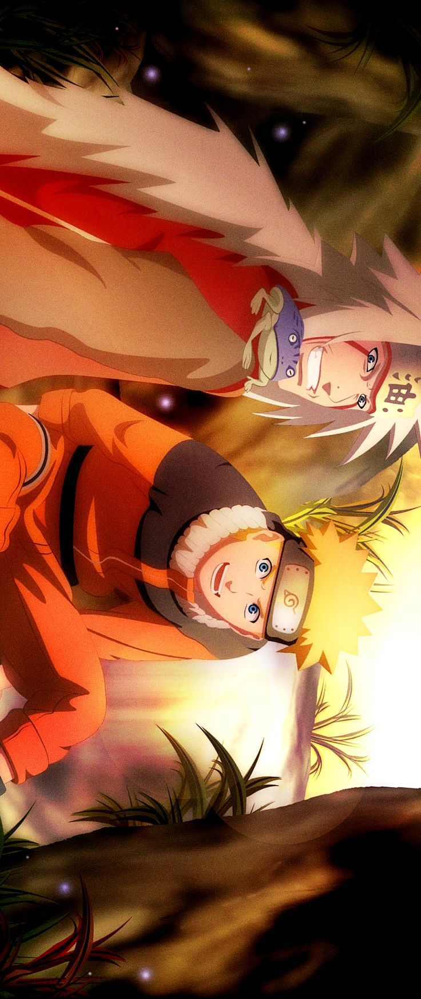
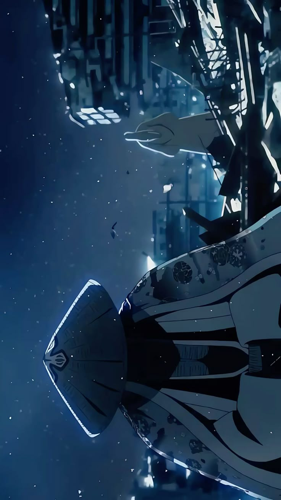
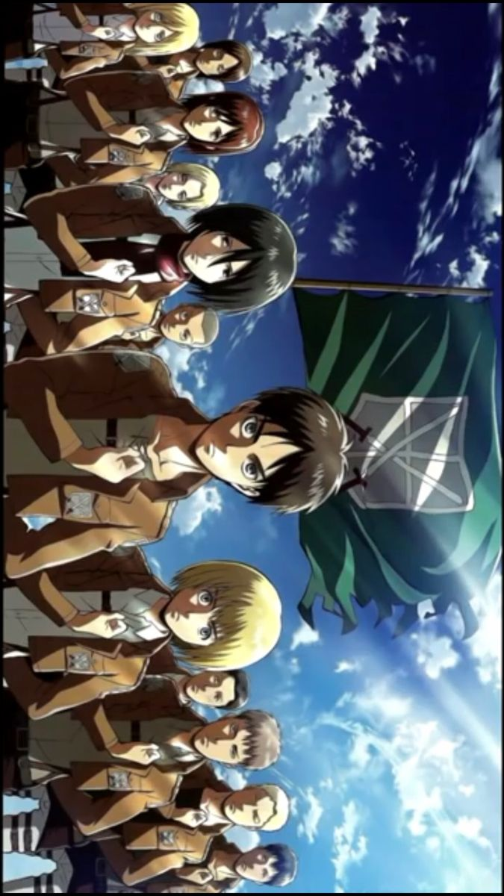
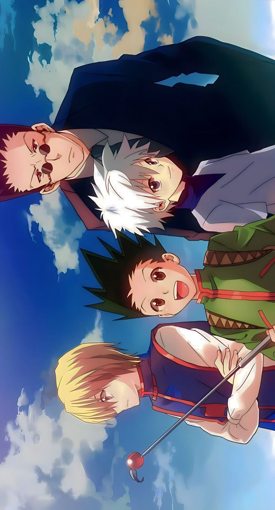
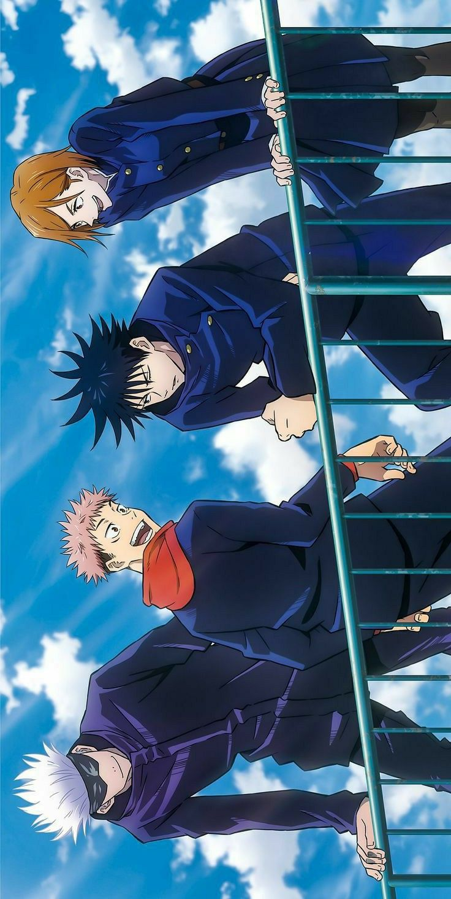
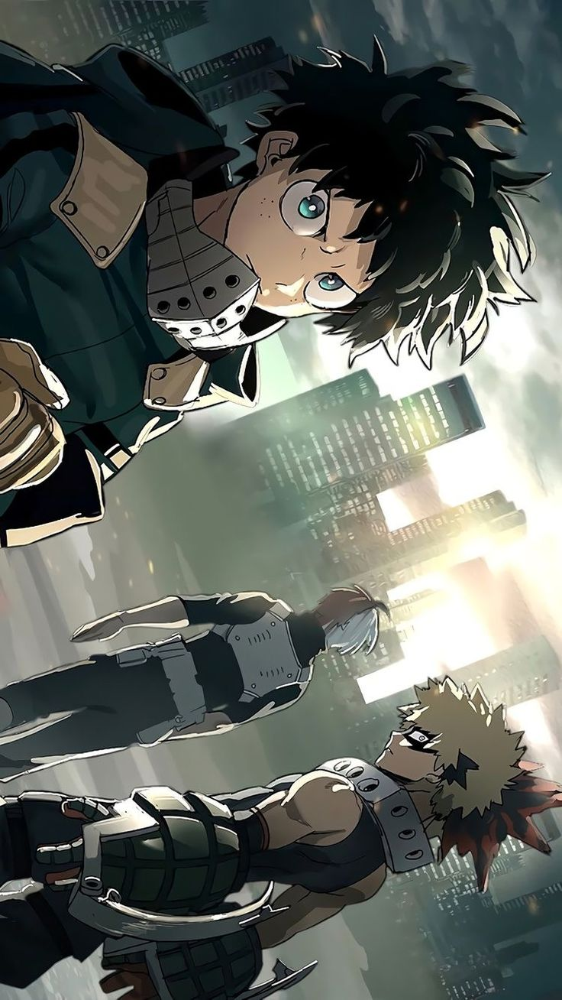

Naruto Shippuden
Naruto suit l’histoire d’un jeune ninja déterminé à devenir Hokage, malgré un passé difficile. Plein d’énergie et de courage, il apprend l’amitié, la persévérance et l’importance de protéger ceux qu’il aime.
Découvrir les personnages
One Piece
One Piece raconte les aventures de Luffy et son équipage à la recherche du légendaire trésor. Plein d’humour, de combats épiques et de rêves, cet anime célèbre l’amitié, la liberté et le dépassement de soi.
Découvrir les personnages

Bleach
Bleach suit Ichigo Kurosaki, capable de voir les esprits, qui devient Shinigami pour protéger les vivants et les morts. L’anime mélange combats surnaturels, amitiés fortes et quêtes personnelles intenses.
Découvrir les personnages

Attaque des Titans
SNK raconte la lutte de l’humanité contre les Titans. Avec des personnages courageux, des révélations choquantes et une tension constante, il explore le courage, la survie et la complexité morale.
Découvrir les personnages

Black Clover
Black Clover suit Asta, un jeune garçon sans magie, qui rêve de devenir l’Empereur Mage. L’anime est rempli de combats, de rivalités et d’une détermination sans faille face aux obstacles.
Découvrir les personnages

Hunter x Hunter
HxH suit Gon Freecss, un garçon qui devient Hunter pour retrouver son père. L’anime explore l’amitié, l’aventure et les combats stratégiques avec un univers riche et imprévisible.
Découvrir les personnages

Sword Art Online
SAO raconte l’histoire de joueurs piégés dans un jeu en réalité virtuelle. Kirito et Asuna luttent pour survivre, mêlant romance, action et questionnements sur le virtuel et le réel.
Découvrir les personnages

Death Note
Death Note suit Light Yagami, un génie qui trouve un carnet capable de tuer. L’anime est un jeu du chat et de la souris intense entre justice et manipulation, mêlant suspense et stratégie.
Découvrir les personnages

Jujutsu Kaisen
Jujutsu Kaisen raconte l’histoire de Yuji Itadori, qui devient sorcier pour combattre des malédictions. L’anime combine combats dynamiques, humour et émotions profondes, avec des personnages attachants.
Découvrir les personnages

Demon Slayer
Demon Slayer suit Tanjiro Kamado qui devient pourfendeur de démons après le massacre de sa famille. L’anime mélange action intense, liens familiaux et une quête de justice touchante et captivante.
Découvrir les personnages

Solo Leveling
Solo Leveling raconte Sung Jin-Woo, un chasseur faible qui devient incroyablement puissant. L’anime mêle aventure, combats épiques et progression spectaculaire dans un univers fantastique.
Découvrir les personnages

My Hero Academia
My Hero Academia suit Midoriya et ses camarades qui deviennent héros. L’anime montre leur apprentissage, leurs combats héroïques et la croissance personnelle, avec des leçons sur le courage et la responsabilité.
Découvrir les personnages